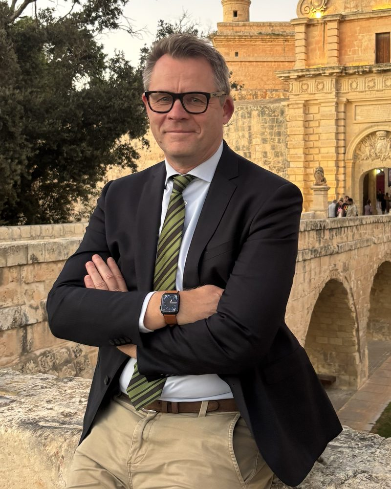

About me

After more than three decades at the Council of Europe, most recently as Director for Democracy, I now work independently on the questions that shaped my career: how European democracy can be made more substantive and resilient, and how it can be genuinely lived by citizens.
My focus is democratic culture: the role of civic education, youth, culture, media freedom, civil society and sport in sustaining democratic societies. At the Council of Europe I led work on education, including education for democratic citizenship, youth cooperation, culture and heritage, and the protection of journalists. Earlier, I served as spokesperson and speechwriter to the Secretary General and as Director of Policy Planning. I began my career as a Slovenian diplomat in Brussels.
Since 2018 I have written a fortnightly column for the Slovenian daily Večer. The columns, in Slovenian and in English, and my speeches as Director for Democracy are collected at matjazgruden.eu.
I speak, write and advise in English, French and Slovenian, and I welcome conversations about keynotes, advisory roles, research collaborations and board positions.